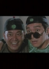

Also known as:Wong Fei Hung V: Tit gai dau ng gung (original title)
Country:Hong Kong, 111 minutes
Spoken languages:English, Mandarin, Cantonese
Genres:Action, Comedy, History
Director(s):Jing Wong, Woo-Ping Yuen
Writer(s):Jing Wong
Video Codec:Unknown
Number: 288


Certification:Not Rated
Storyline:
Jet Li stars in this comic spectacle as a Chinese "Robin Hood" who stumbles upon a kidnapping scheme after unwittingly opening a martial arts school next to a brothel!
Cast: 


Medium: Original DVD,
Comments: Part of: Jet Fighter Jet Li 4 Film Set
Loaned: No
Aspect ratio: Unknown